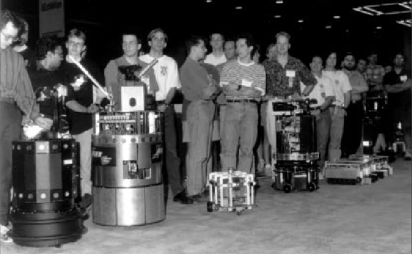
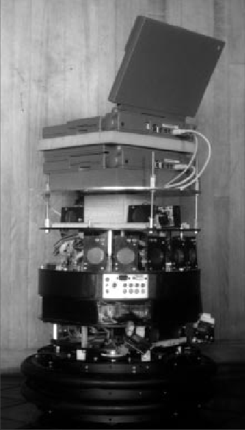
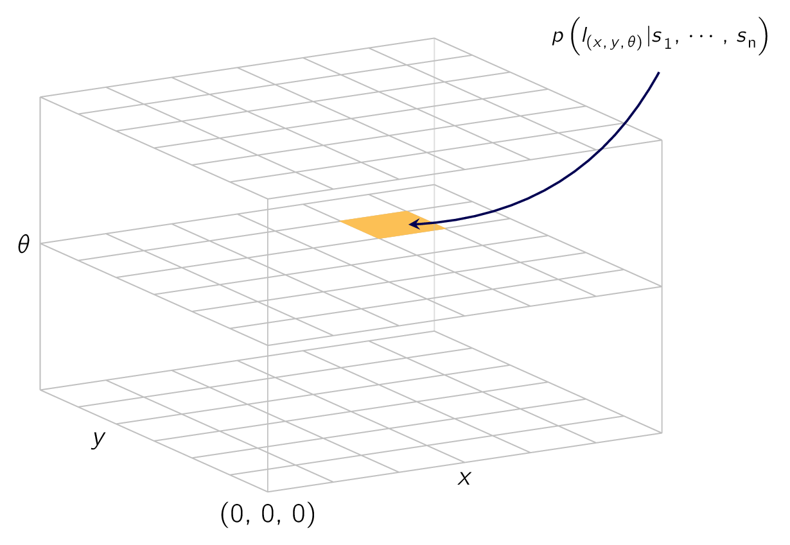
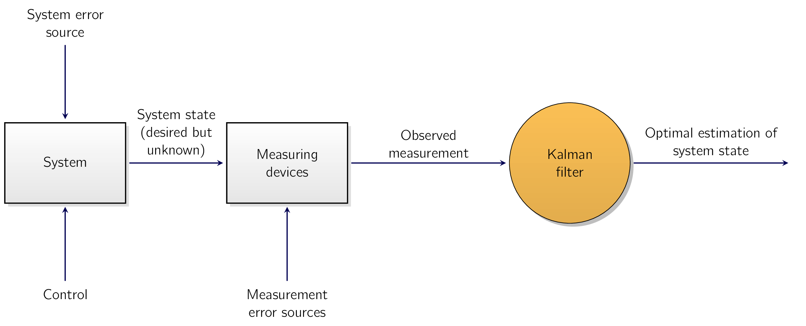
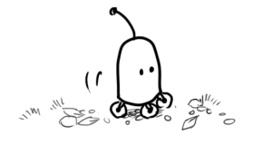
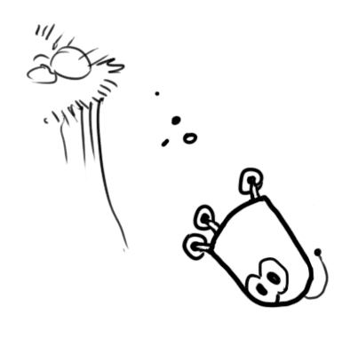
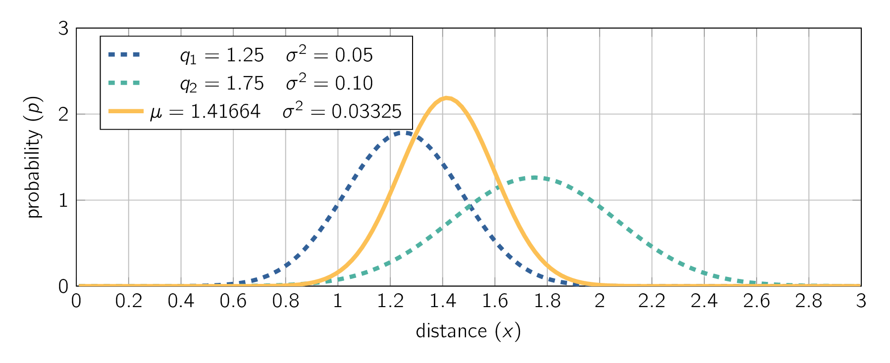
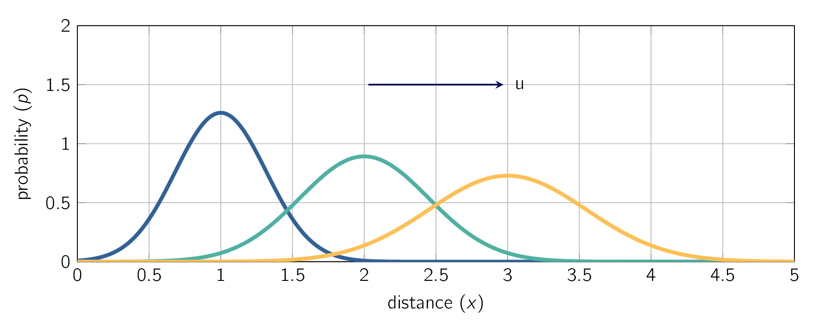
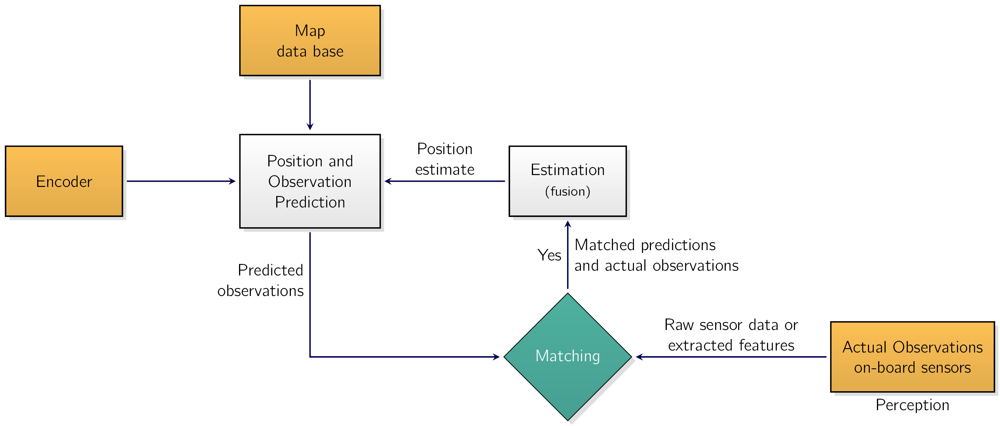

As previously stated, multiple hypothesis position representation is advantageous as an AMRAutonomous Mobile RoboticsSelf-navigating machines moving materials and goods independently without fixed tracks or wires. They use smart software, cameras, and sensors to map spaces and safely steer around people or obstacles in real time. can explicitly track its own beliefs regarding its possible positions in the environment. Ideally, the robot’s belief state will change, over time, as is consistent with its motor outputs and perceptual inputs. One geometric approach to multiple hypothesis representation, mentioned previously, involves identifying the possible positions of the robot by specifying a polygon in the environmental representation [113]. However, this method does NOT provide any indication of the relative chances between various possible robot positions.
Probabilistic techniques differ from this method as they explicitly identify probabilities with the possible robot positions, and for this reason these methods have been the focus of recent research.
In the following sections we present two (2) classes of probabilistic localisation.
- Markov localisation
-
an explicitly specified probability distribution across all possible robots positions.
- Kalman filter localisation
-
a Gaussian probability density representation of robot position and scan matching for localisation.
Unlike Markov localisation, Kalman filter localisation does not independently consider each possible pose in the robot’s configuration space. Interestingly, the Kalman filter localization process results from the Markov localisation axioms if the robot’s position uncertainty is assumed to have a Gaussian form [28 page 43-44].
Before discussing each method in detail, let’s understand the general robot localization problem and solution strategy.
Consider a AMRAutonomous Mobile RoboticsSelf-navigating machines moving materials and goods independently without fixed tracks or wires. They use smart software, cameras, and sensors to map spaces and safely steer around people or obstacles in real time. moving in a known environment. As it starts to move, say from a precisely known location, it can keep track of its motion using odometry. Due to odometry uncertainty, after some movement the robot will become very uncertain about its position. [117] We have derived its mathematical properties in An Error Model for Odometric Position Estimation. To keep position uncertainty from growing unbounded, the robot needs localise itself in relation to its environment map. To localise, the robot might use its on-board sensors [118] such as ultrasonic, range sensor, vision. to make observations of its environment. The information provided by the robot’s odometry, plus the information provided by such exteroceptive observations can be combined to enable the robot to localise as well as possible with respect to its map.
The processes of updating based on proprioceptive sensor values and exteroceptive sensor values are often separated logically, leading to a general two-step process for robot position update. Action update represents the application of some action model () to the AMRAutonomous Mobile RoboticsSelf-navigating machines moving materials and goods independently without fixed tracks or wires. They use smart software, cameras, and sensors to map spaces and safely steer around people or obstacles in real time.’s proprioceptive encoder measurements and prior belief state to provide a new belief state representing the robot’s belief about its current position.
We will assume that the robot’s proprioceptive encoder measurements are used as the best possible measure of its actions over time.
We ignore such cases and therefore have a simple formula:
| (4.4) |
Perception update represents the application of some perception model See to the AMRAutonomous Mobile RoboticsSelf-navigating machines moving materials and goods independently without fixed tracks or wires. They use smart software, cameras, and sensors to map spaces and safely steer around people or obstacles in real time.’s exteroceptive sensor inputs and updated belief state to give a refined belief state representing the robot’s current position:
| (4.5) |
The perception model () and sometimes the action model () are abstract functions of both the map and the robot’s physical configuration. [119] such as sensors and their positions, kinematics, etc.
In general, the action update process contributes uncertainty to the robot’s belief about position:
In contrast, perception update generally refines the belief state. Sensor measurements, when compared to the robot’s environmental model, tend to provide clues regarding the robot’s possible position.
In the case of Markov localisation, the robot’s belief state is usually represented as separate probability assignments for every possible robot pose in its map. The action update and perception update processes must update the probability of every cell in this case. Kalman filter localization represents the robot’s belief state using a singe, well-defined Gaussian probability density function, and therefore retains just a and parameterization of the robot’s belief about position with respect to the map. Updating the parameters of the Gaussian distribution is all that is required.
This fundamental difference in the representation of belief state leads to the following advantages and disadvantages of the two (2) methods, as presented in [†-1] Brock, O. & Khatib, O. High-speed navigation using the global dynamic window approach in Proceedings 1999 ieee international conference on robotics and automation (Cat. No. 99CH36288C) 1 (1999), 341–346:
-
Markov localization allows for localization starting from any unknown position and can therefore recover from ambiguous situations because the robot can track multiple, completely disparate possible positions. However, to update the probability of all positions within the whole state space at any time requires a discrete representation of the space (grid). The required memory and computational power can thus limit precision and map size.
-
Kalman filter localization tracks the robot from an initially known position and is inherently both precise and efficient. In particular, Kalman filter localization can be used in continuous world representations. However, if the uncertainty of the robot becomes too large [120] e.g. due to a robot collision with an object. and therefore not truly unimodal, the Kalman filter can fail to capture the multitude of possible robot positions and can become irrevocably lost.
Improvements are achieved or proposed by either only updating the state space of interest within the Markov approach [†-2] Borenstein, J & Koren, Y. Fast obstacle avoidance for mobile robots. IEEE Trans Rob Autom. v7, 278–287 or by combining both methods to create a hybrid localization system [†-1] Brock, O. & Khatib, O. High-speed navigation using the global dynamic window approach in Proceedings 1999 ieee international conference on robotics and automation (Cat. No. 99CH36288C) 1 (1999), 341–346.
We will now look at them in great detail.
Markov localization tracks the robot’s belief state using an arbitrary probability density function to represent the robot’s position. In practice, all known Markov localization systems implement this generic belief representation by first tessellating [121] a pattern of one or more geometric shapes that cover a flat surface completely, without leaving any empty spaces or overlapping one another. the robot configuration space into a finite, discrete number of possible robot poses in the map.
In actual applications, the number of possible poses can range from several hundred positions to millions of positions.
Given such a generic conception of robot position, a powerful update mechanism is required which can compute the belief state that results when new information [122] e.g. encoder values and sensor values. is incorporated into a prior belief state with arbitrary probability density.
The solution is born out of probability theory, and so the next section describes the foundations of probability theory related to this problem, notably Bayes formula.
Then, two subsequent subsections provide case studies, one robot implementing a simple feature-driven topological representation of the environment [†-3] Brooks, R. A robust layered control system for a mobile robot. IEEE journal on robotics and automation 2, 14–23 (1986), and the other using a geometric grid-based map [†-2] Borenstein, J & Koren, Y. Fast obstacle avoidance for mobile robots. IEEE Trans Rob Autom. v7, 278–287.
Application of Probability for Localisation
Given a discrete representation of robot positions, for us to express a belief state we wish to assign to each possible robot position a probability the robot is indeed at that position.
From theory of probability, we use the term to denote the probability that is true. This is also called the prior probability of because it measures the probability that is true independent of any additional knowledge we may have.
For example we can use to denote the prior probability the robot is at position at time .
In practice, we would like to calculate the probability of each individual robot position given the encoder and sensor evidence the robot has collected. For this, we use the term to denote the conditional probability of given that we know .
For example, we use to denote the probability that the robot is at position given that the robot’s sensor inputs .
The question we would like to answer is the following;
The answer lies in the product rule, which states:
| (4.6) |
The equation given in Eq. (4.6) is relatively straightforward, as the probability of both and [123] To simplify notation we will be using the wedge () symbol to denote AND, and the vee () symbol to denote OR. being true is being related to being true and the other being conditionally true. But you should be able to convince yourself that the alternate equation is equally correct:
| (4.7) |
Using both Eq. (4.6) and Eq. (4.7) together, we can derive Bayes formula for computing :
| (4.8) |
We use Bayes rule to calculate the robot’s new belief state as a function of its sensory inputs and its former belief state. However to do this properly, we must recall the basic goal of the Markov localisation approach:
The belief state of the robot must assign a probability for each location in .
The function described in Eq. (4.5) expresses a mapping from a belief state and sensor input to a refined belief state. To do this, we must update the probability associated with each position in , and we can do this by directly applying Bayes formula to every such .
In denoting this, we will stop representing the temporal index for simplicity and will further use to mean :
| (4.9) |
The value of is key to Eq. (4.9) , and this probability of a sensor input at each robot position must be computed using some model. An obvious strategy would be to consult the robot’s map, identifying the probability of particular sensor readings with each possible map position, given knowledge about the robot’s sensor geometry and the mapped environment. The value of is easy to recover in this case. It is simply the probability associated with the belief state before the perceptual update process.
Finally, note that the denominator does NOT depend upon . That is, as we apply Eq. (4.9) to all positions in , the denominator never varies.
Because it is effectively constant, in practice this denominator is usually dropped and, at the end of the perception update step, all probabilities in the belief state are re-normalized to sum at 1.0.
Now consider the function of Eq. (4.4) . Act maps a former belief state and encoder measurement [124] i.e. robot action. to a new belief state. To compute the probability of position in the new belief state, one must integrate over all the possible ways in which the robot may have reached according to the potential positions expressed in the former belief state. This is subtle but fundamentally important. The same location l can be reached from multiple source locations with the same encoder measurement because the encoder measurement is uncertain.
Temporal indices are required in this update equation:
| (4.10) |
Therefore, the total probability for a specific position is built up from the individual contributions from every location in the former belief state given encoder measurement .
Eq. (4.9) and Eq. (4.10) form the basis of Markov localization, and they incorporate the Markov assumption. Formally, this means that their output is a function only of the robot’s previous state and its most recent actions (odometry) and perception.
In general, non-Markovian situation, the state of a system depends upon all of its history.
After all, the value of a robot’s sensors at time do not really depend only on its position at time . They depend to some degree on the trajectory of the robot over time or the entire history of the robot.
By the same token, the position of the robot at time does not really depend only on its position at time and its odometric measurements. Due to its history of motion, one wheel may have worn more than the other, causing a left-turning bias over time that affects its current position.
So the Markov assumption is, of course, not a valid assumption. However the Markov assumption greatly simplifies tracking, reasoning and planning and so it is an approximation that continues to be extremely popular in mobile robotics.
Historical Application: Markov Localisation using a Topological Map
A straightforward application of Markov localization is possible when the robot’s environment representation already provides an appropriate decomposition. This is the case when the environment representation is purely topological.

Consider a contest in which each robot is to receive a topological description of the environment. The description would describe only the connectivity of hallways and rooms, with no mention of geometric distance. In addition, this supplied map would be imperfect, containing several false arcs. [125] Such as closed doors. Such was the case for the 1994 AAAI National Robot Contest [†-4] Simmons, R. The 1994 AAAI robot competition and exhibition. AI magazine 16, 19–30 (1995), at which each robot’s mission was to use the supplied map and its own sensors to navigate from a chosen starting position to a target room.
Dervish [126] ¶ 
Dervish, shown in the margins, includes a sonar arrangement custom-designed for the 1994 AAAI National Robot Contest. The environment in this contest consisted of a rectilinear indoor office space filled with real office furniture as obstacles. Traditional sonars are arranged radially around the robot in a ring. Robots with such sensor configurations are subject to both tripping over short objects below the ring and to decapitation by tall objects [127] such as ledges, shelves and tables. that are above the ring.
Dervish’s answer to this challenge was to arrange one pair of sonars diagonally upward to detect ledges and other overhangs. In addition, the diagonal sonar pair also proved to ably detect tables, enabling the robot to avoid wandering underneath tall tables. The remaining sonars were clustered in sets of sonars, such that each individual transducer in the set would be at a slightly varied angle to minimize specularity. Finally, two sonars near the robot’s base were able to detect low obstacles such as paper cups on the floor.
We have already noted that the representation provided by the contest organizers was purely topological, noting the connectivity of hallways and rooms in the office environment. Therefore, it would be appropriate to design Dervish’s perceptual system to detect matching perceptual events:
This abstract perceptual system was implemented by viewing the trajectory of sonar strikes to the left and right sides of Dervish over time. Interestingly, this perceptual system would use time alone and no concept of encoder value in order to trigger perceptual events.
Sonars have a notoriously problematic error mode known as specular reflection.
When the sonar unit strikes a flat surface at a shallow angle, the sound may reflect coherently away from the transducer, resulting in a large overestimate of range.
Dervish was able to filter such potential noise by tracking its approximate angle in the hallway and completely suppressing sensor events when its angle to the hallway parallel exceeded 9 degrees. Interestingly, this would result in a conservative perceptual system that would easily miss features because of this suppression mechanism, particularly when the hallway is crowded with obstacles that Dervish must negotiate.
Once again, the conservative nature of the perceptual system, and in particular its tendency to issue false negatives, would point to a probabilistic solution to the localization problem so that a complete trajectory of perceptual inputs could be considered.
Dervish’s environment representation was a classical topological map, identical in abstrac- tion and information to the map provided by the contest organizers. Figure 5.21 depicts a geometric representation of a typical office environment and the topological map for the same office environment. One can place nodes at each intersection and in each room, re- sulting in the case of figure 5.21 with four nodes total.
Once again, though, it is crucial for one to maximize the information content of the representation based on the available percepts. This means reformulating the standard topological graph shown in Figure 5.21 so that transitions into and out of intersections may both be used for position updates. Figure 5.22 shows a modification of the topological map in which just this step has been taken. In this case, note that there are 7 nodes in contrast to 4.
To represent a specific belief state, Dervish associated with each topological node n a probability that the robot is at a physical position within the boundaries of . As will become clear below, the probabilistic update used by Dervish was approximate, therefore technically one should refer to the resulting values as likelihoods rather than probabilities.
The perception update process for Dervish functions precisely as in Eq. (4.9). Perceptual events are generated asynchronously, each time the feature extractor is able to recognize a large-scale feature [128] such as a doorway, or a intersection. based on recent ultrasonic values. Each perceptual event consists of a percept-pair. [129] Meaning a feature on one side of the robot or two features on both sides.
| Wall | Closed Door | Open Door | Open Hallway | Foyer | |
| Nothing Detected | 0.70 | 0.40 | 0.05 | 0.001 | 0.30 |
| Closed Door Detected | 0.30 | 0.60 | 0 | 0 | 0.05 |
| Open Door Detected | 0 | 0 | 0.90 | 0.10 | 0.15 |
| Closed Hallway Detected | 0 | 0 | 0.001 | 0.90 | 0.5 |
Given a specific percept pair , Eq. (4.9) enables the likelihood of each possible position to be updated using the formula:
| (4.11) |
The value of is already available from the current belief state of Dervish, and so the challenge lies in computing . The key simplification for Dervish is based upon the realization that, because the feature extraction system only extracts 4 total features and because a node contains (on a single side) one of 5 total features, every possible combination of node type and extracted feature can be represented in a table.
Dervish’s certainty matrix as shown in Tbl. 4.1, is just this lookup table. Dervish makes the simplifying assumption that the performance of the feature detector [130] i.e., the probability that it is correct. is only a function of the feature extracted and the actual feature in the node. With this assumption in hand, we can populate the certainty matrix with confidence estimates for each possible pairing of perception and node type.
For each of the five world features that the robot can encounter [131] such as wall, closed door, open door, open hallway and foyer. this matrix assigns a likelihood for each of the three one-sided percepts that the sensory system can issue. In addition, this matrix assigns a likelihood that the sensory system will fail to issue a perceptual event altogether. [132] nothing detected.
For example, using the specific values in Tbl. 4.1, if Dervish is next to an open hallway, the likelihood of mistakenly recognizing it as an open door is 0.10. This means that for any node which is of type Open Hallway and for the sensor value i=Open door, p(i|n) = 0.10. Together with a specific topological map, the certainty matrix enables straightforward com- putation of p(i|n) during the perception update process.
For Dervish’s particular sensory suite and for any specific environment it intends to navi- gate, humans generate a specific certainty matrix that loosely represents its perceptual con- fidence, along with a global measure for the probability that any given door will be closed versus opened in the real world.
Recall that Dervish has no encoders and that perceptual events are triggered asynchronously by the feature extraction processes. Therefore, Dervish has no action update step as depicted by Equation (5.22). When the robot does detect a perceptual event, multiple perception up- date steps will need to be performed in order to update the likelihood of every possible robot position given Dervish’s former belief state. This is because there is often a chance that the robot has traveled multiple topological nodes since its previous perceptual event (i.e. false negative errors). Formally, the perception update formula for Dervish is in reality a combi- nation of the general form of action update and perception update. The likelihood of posi- tion n given perceptual event i is calculated as in Equation (5.22):
| (4.12) |
The value of p(n’ ) denotes the likelihood of Dervish being at position n’ as represented by Dervish’s former belief state. The temporal subscript t-i is used in lieu of t-1 because for each possible position n’ the discrete topological distance from n’ to n can vary depending on the specific topological map. The calculation of p(n n’ , i ) is performed by multi- tt-it plying the probability of generating perceptual event i at position n by the probability of hav- ing failed to generate perceptual events at all nodes between n’ and n:
For example (figure 5.23), suppose that the robot has only two nonzero nodes in its belief state, 1-2, 2-3, with likelihoods associated with each possible position: p(1-2) = 1.0 and p(2-3) = 0.2. For simplicity assume the robot is facing East with certainty. Note that the likelihoods for nodes 1-2 and 2-3 do not sum to 1.0. These values are not formal probabil- ities, and so computational effort is minimized in Dervish by avoiding normalization alto- gether. Now suppose that a perceptual event is generated: the robot detects an open hallway on its left and an open door on its right simultaneously. State 2-3 will progress potentially to states 3, 3-4 and 4. But states 3 and 3-4 can be elimi- nated because the likelihood of detecting an open door when there is only wall is zero. The likelihood of reaching state 4 is the product of the initial likelihood for state 2-3, 0.2, the like- lihood of not detecting anything at node 3, (a), and the likelihood of detecting a hallway on the left and a door on the right at node 4, (b). Note that we assume the likelihood of detecting nothing at node 3-4 is 1.0 (a simplifying approximation). (a) occurs only if Dervish fails to detect the door on its left at node 3 (either closed or open), [(0.6)(0.4) + (1-0.6)(0.05)], and correctly detects nothing on its right, 0.7. (b) occurs if Dervish correctly identifies the open hallway on its left at node 4, 0.90, and mis- takes the right hallway for an open door, 0.10. The final formula, (0.2)[(0.6)(0.4)+(0.4)(0.05)](0.7)[(0.9)(0.1)], yields a likelihood of 0.003 for state 4. This is a partial result for p(4) following from the prior belief state node 2-3. Turning to the other node in Dervish’s prior belief state, 1-2 will potentially progress to states 2, 2-3, 3, 3-4 and 4. Again, states 2-3, 3 and 3-4 can all be eliminated since the like- lihood of detecting an open door when a wall is present is zero. The likelihood of state 2 is the product of the prior likelihood for state 1-2, (1.0), the likelihood of detecting the door on the right as an open door, [(0.6)(0) + (0.4)(0.9)], and the likelihood of correctly detecting an open hallway to the left, 0.9. The likelihood for being at state 2 is then (1.0)(0.4)(0.9)(0.9) = 0.3. In addition, 1-2 progresses to state 4 with a certainty factor of -6 4.3 10 , which is added to the certainty factor above to bring the total for state 4 to 0.00328. Dervish would therefore track the new belief state to be 2, 4, assigning a very high likelihood to position 2 and a low likelihood to position 4. Empirically, Dervish’s map representation and localization system have proven to be suffi- cient for navigation of four indoor office environments: the artificial office environment cre- ated explicitly for the 1994 National Conference on Artificial Intelligence; the psychology department, the history department and the computer science department at Stanford Uni- versity. All of these experiments were run while providing Dervish with no notion of the distance between adjacent nodes in its topological map. It is a demonstration of the power of probabilistic localization that, in spite of the tremendous lack of action and encoder infor- mation, the robot is able to navigate several real-world office buildings successfully.
One open question remains with respect to Dervish’s localization system. Dervish was not just a localizer but also a navigator. As with all multiple hypothesis systems, one must ask the question, how does the robot decide how to move, given that it has multiple possible ro- bot positions in its representation? The technique employed by Dervish is a most common technique in the AMRAutonomous Mobile RoboticsSelf-navigating machines moving materials and goods independently without fixed tracks or wires. They use smart software, cameras, and sensors to map spaces and safely steer around people or obstacles in real time.ics field: plan the robot’s actions by assuming that the robot’s actual position is its most likely node in the belief state. Generally, the most likely position is a good measure of the robot’s actual world position. However, this technique has short- comings when the highest and second highest most likely positions have similar values. In the case of Dervish, it nonetheless goes with the highest likelihood position at all times, save at one critical juncture. The robot’s goal is to enter a target room and remain there. There- fore, from the point of view of its goal, it is critical that it finish navigating only when the robot has strong confidence in being at the correct final location. In this particular case, Der- vish’s execution module refuses to enter a room if the gap between the most likely position and the second likeliest position is below a preset threshold. In such a case, Dervish will actively plan a path that causes it to move further down the hallway in an attempt to collect more sensor data and thereby increase the relative likelihood of one position in the belief state. Although computationally unattractive, one can go further, imagining a planning system for robots such as Dervish for which one specifies a goal belief state rather than a goal position. The robot can then reason and plan in order to achieve a goal confidence level, thus explic- itly taking into account not only robot position but also the measured likelihood of each po- sition. An example of just such a procedure is the Sensory Uncertainty Field of Latombe [90], in which the robot must find a trajectory that reaches its goal while maximizing its lo- calization confidence enroute.
Case Study II: Markov Localization using a Grid Map

The major weakness of a purely topological decomposition of the environment is the resolution limitation imposed by such a granular representation. The position of the robot is usually limited to the resolution of a single node in such cases, and may be undesirable for certain applications.
In this case study, we examine the work of Burgard et al. [42, 43] in which far more precise navigation is made possible using a grid-based representation while still employing the Markov localization technique.
The robot used by this research, Rhino, is an RWI B24 robot with 24 sonars and 2 Sick laser rangefinders. Clearly, at the sensory level this robot accumulates greater and more accurate range data than is possible with the handful of sonar sensors mounted on Dervish. In order to make maximal use of this fine-grained sensory data, Rhino uses a 2D geometric environ- mental representation of free and occupied space. This metric map is tessellated regularly into a fixed decomposition grid with each cell occupying 4 - 64cm in various instantiations. Like Dervish, Rhino uses multiple hypothesis belief representation. In line with the far im- proved resolution of the environment representation, the belief state representation of Rhino 3 consists of a 15 x 15 x 15 3D array representing the probability of 15 possible robot posi- tions (see Figure 5.24). The resolution of the array is 15cm x 15cm x 1ř. Note that unlike Dervish, which assumes its orientation is approximate and known, Rhino explicitly repre- sents fine-grained alternative orientations, and so its belief state formally represents three degrees of freedom. As we have stated before, the resolution of the belief state representa- tion must match the environment representation in order for the overall system to function well.
Whereas Dervish made use only perceptual events, ignoring encoder inputs and therefore metric distance altogether, Rhino uses the complete Markov probabilistic localization ap- proach summarized in Section (5.6.2.1), including both an explicit action update phase and

The Markov localization model can represent any probability density function over robot
position. This approach is very general but, due to its generality, inefficient. A successful alternative is to use a more compact representation of a specific class of probability densi- ties. The Kalman filter does just this, and is an optimal recursive data processing algorithm. It incorporates all information, regardless of precision, to estimate the current value of the variable of interest. A comprehensive introduction can be found in [46] and a more detailed treatment is presented in [28]. Figure 5.26 depicts the a general scheme of Kalman filter estimation, where the system has a control signal and system error sources as inputs. A measuring device enables measuring some system states with errors. The Kalman filter is a mathematical mechanism for produc- ing an optimal estimate of the system state based on the knowledge of the system and the measuring device, the description of the system noise and measurement errors and the un- certainty in the dynamics models. Thus the Kalman filter fuses sensor signals and system knowledge in an optimal way. Optimality depends on the criteria chosen to evaluate the per- formance and on the assumptions. Within the Kalman filter theory the system is assumed to be linear and white with Gaussian noise. As we have discussed earlier, the assumption of Gaussian error is invalid for our AMRAutonomous Mobile RoboticsSelf-navigating machines moving materials and goods independently without fixed tracks or wires. They use smart software, cameras, and sensors to map spaces and safely steer around people or obstacles in real time. applications but, nevertheless, the results are extremely useful. In other engineering disciplines, the Gaussian error assumption has in some cases been shown to be quite accurate [46]. We begin with a subsection that introduces Kalman filter theory, then we present an appli- cation of that theory to the problem of AMRAutonomous Mobile RoboticsSelf-navigating machines moving materials and goods independently without fixed tracks or wires. They use smart software, cameras, and sensors to map spaces and safely steer around people or obstacles in real time. localization. Finally, the third subsec- tion will present a case study of a AMRAutonomous Mobile RoboticsSelf-navigating machines moving materials and goods independently without fixed tracks or wires. They use smart software, cameras, and sensors to map spaces and safely steer around people or obstacles in real time. that navigates indoor spaces by virtue of Kalman filter localization.
Let’s make a toy example: You’ve built a little robot that can wander around in the woods, and the
robot needs to know exactly where it is so that it can navigate. [133] ¶ 
We’ll say our robot has a state , which is just a position and a velocity:
| (4.13) |
Note that the state is just a list of numbers about the underlying configuration of your system; it could be anything. In our example it’s position and velocity, but it could be data about the amount of fluid in a tank, the temperature of a car engine, the position of a user’s finger on a touchpad, or any number of things you need to keep track of.
Our robot also has a GPS sensor, which is accurate to about 10 meters, which is good, but it needs to
know its location more precisely than 10 meters. There are lots of gullies and cliffs in these woods, and
if the robot is wrong by more than a few feet, it could fall off a cliff. So GPS by itself is not good
enough. [134] ¶ 
A Gentle Introduction to Kalman Filter Theory
The method of Kalman filter allows multiple measurements to be incorporated optimally into a single estimate of state. Before we start definining the filter mathematically, we first need to make the fundamental assumption that the state does NOT change [135] i.e., we are assuming the robot is stationary. between the acquisition of the first and second measurement. Once we define the static case, we then work with the dynamic version.
Static Estimation Let us assume we’ve taken two (2) measurements:
-
one with an ultrasonic range sensor at time , and
-
one with a more precise laser range sensor at time .
Based on each measurement we are able to estimate the robot’s position.
Such an estimate derived from the sensor measurements is and the estimate of position based on the measurement is .
As we know each measurement can be inaccurate, [136] As no sensor neither perfect, or accurate. we wish to modulate these position estimates based on the expected measurement error from each sensor.
Suppose we use two (2) variances to predict the error associated with each measurement. We will assume a unimodal error distribution [137] a probability distribution with a single, clear peak, indicating that errors are clustered around one central value (usually zero). throughout the remainder of the Kálman filter approach, which gives us the two (2) robot position estimates:
So now we have two (2) measurements available to estimate the robots position. The question we now have to answer is:
We are assuming, as we stated previously, there was no robot motion between time and time , and therefore we can directly apply the same weighted least square technique:
| (4.17) |
where is the weight of measurement . To find the minimum error we take the derivative of and equate it to zero.
| (4.18) |
then the value of in terms of two (2) measurements () can be defined as follows:
| (4.19) |
Note that, Eq. (4.19) we can see that the resulting variance is less than all the variances of the individual measurements. Therefore the uncertainty of the position estimate has been decreased by combining the two measurements.

This demonstrates that even poor measurements only increase the precision of an estimate as shown in Fig. 4.15, a result that we expect based on Information Theory. Eq. (4.19) can be rewritten as:
| (4.20) |
or, in final form which is used in Kalman filter implementation
| (4.21) |
Dynamic Estimation Following our previous model, we will now consider a robot which moves between successive sensor measurements. Suppose that the motion of the robot between times and is described by the velocity and the noise which represents the uncertainty of the actual velocity:
| (4.22) |
If we now start at time , knowing the variance of the robot position at this time and knowing the variance of the motion, we obtain for the time just when the measurement is taken:
where , and , are the time in seconds at and respectively. Therefore is the optimal prediction of the robot’s position just as the measurement is taken at time . It describes the growth of position error until a new measurement is taken which is shown in Fig. 4.16.

We can now rewrite Eq. (4.21) using Eq. (4.23):
| (4.24) |
The optimal estimate at time is given by the last estimate at and the estimate of the robot motion including the estimated movement errors.
By extending the above equations to the vector case and allowing time varying parameters in the system and a description of noise, we can derive the Kalman filter localization algorithm.
Kalman Filter Localisation
The Kalman filter is an optimal and efficient sensor fusion technique.
Application of the Kalman filter to localisation requires posing the robot localisation problem as a sensor fusion problem.
Recall that the basic probabilistic update of robot belief state can be segmented into two (2) phases:
-
perception update, and
-
action update
The fundamental difference between the Kalman filter approach and Markov localisation approach lies in the perception update process.
In some cases, the perception is abstract, having been produced by a feature extraction mechanism. [139] as in Dervish. In other cases, as with Rhino, the perception consists of raw sensor readings.
By contrast, perception update using a Kalman filter is a multi-step process. The robot’s total sensory input is treated, not as a monolithic whole, but as a set of extracted features which each relate to objects in the environment. Given a set of possible features, the Kalman filter is used to fuse the distance estimate from each feature to a matching object in the map. Instead of carrying out this matching process for many possible robot locations individually as in the Markov approach, the Kalman filter accomplishes the same probabilistic update by treating the whole, unimodal and Gaussian belief state at once. Fig. ?? depicts the particular schematic for Kalman filter localisation.

The first step is action update or position prediction, the straightforward application of a Gaussian error motion model to the robot’s measured encoder travel. The robot then collects actual sensor data and extracts appropriate features [140] e.g., lines, doors, or even the value of a specific sensor in the observation step. At the same time, based on its predicted position in the map, the robot generates a measurement prediction which identifies the features which the robot expects to find and the positions of those features. In matching the robot identifies the best pairings between the features actually extracted during observation and the expected features due to measurement prediction. Finally, the Kalman filter can fuse the information provided by all of these matches in order to update the robot belief state in estimation.
-
¶
- AMRAutonomous Mobile Robotics
Self-navigating machines moving materials and goods independently without fixed tracks or wires. They use smart software, cameras, and sensors to map spaces and safely steer around people or obstacles in real time.
- 1.
- Brock, O. & Khatib, O. High-speed navigation using the global dynamic window approach in Proceedings 1999 ieee international conference on robotics and automation (Cat. No. 99CH36288C) 1 (1999), 341–346
- 2.
- Borenstein, J & Koren, Y. Fast obstacle avoidance for mobile robots. IEEE Trans Rob Autom. v7, 278–287
- 3.
- Brooks, R. A robust layered control system for a mobile robot. IEEE journal on robotics and automation 2, 14–23 (1986)
- 4.
- Simmons, R. The 1994 AAAI robot competition and exhibition. AI magazine 16, 19–30 (1995)
- 5.
- Nourbakhsh, I., Powers, R. & Birchfield, S. DERVISH an office-navigating robot. AI magazine 16, 53–53 (1995)
- [117].
- We have derived its mathematical properties in An Error Model for Odometric Position Estimation.
- [118].
- such as ultrasonic, range sensor, vision.
- [119].
- such as sensors and their positions, kinematics, etc.
- [120].
- e.g. due to a robot collision with an object.
- [121].
- a pattern of one or more geometric shapes that cover a flat surface completely, without leaving any empty spaces or overlapping one another.
- [122].
- e.g. encoder values and sensor values.
- [123].
- To simplify notation we will be using the wedge () symbol to denote AND, and the vee () symbol to denote OR.
- [124].
- i.e. robot action.
- [125].
- Such as closed doors.
- [127].
- such as ledges, shelves and tables.
- [128].
- such as a doorway, or a intersection.
- [129].
- Meaning a feature on one side of the robot or two features on both sides.
- [130].
- i.e., the probability that it is correct.
- [131].
- such as wall, closed door, open door, open hallway and foyer.
- [132].
- nothing detected.
- [135].
- i.e., we are assuming the robot is stationary.
- [136].
- As no sensor neither perfect, or accurate.
- [137].
- a probability distribution with a single, clear peak, indicating that errors are clustered around one central value (usually zero).
- [138].
- i.e., the robot’s set of instantaneous sensor measurements.
- [139].
- as in Dervish.
- [140].
- e.g., lines, doors, or even the value of a specific sensor